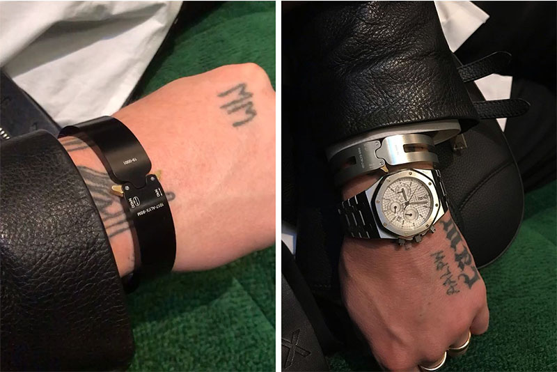

HIGHFASHN
Мода
Обувь
Matthew M Williams тизерит предстоящие 1017 ALYX 9SM Браслеты
Наряду с проэктом лейбла Blockchain Pilot.

Помимо демонстрации проекта 1017 ALYX 9SM на блокчейне в этом году на саммите моды в Копенгагене дизайнер Мэтью М. Уильямс воспользовался этим событием как прекрасной возможностью, чтобы продемонстрировать готовящийся к выпуску бренд Rollercoaster Bangles своего лейбла.
Какое-то время разрабатывался новый аксессуар для запястья, который расширяет линейку предложений ALYX, в которых используются запатентованные быстросъемные пряжки. Браслеты изготовлены из матового серебра и матового черного цвета, изготовлены из цельного анодированного алюминия и украшены оригинальными лазерными украшениями. Средние вырезы и контрастные детали золотистого цвета завершают дизайн браслетов 1017 ALYX 9SM.
Принимая участие в ежегодном праздновании развития моды, 1017 ALYX 9SM представляет свой пилотный проект блокчейна, созданный в сотрудничестве с Эвери Деннисоном на семинаре Design Studio. Дуэт разработал систему, в которой каждый предмет одежды помечен уникальным QR-кодом, который позволяет покупателям отслеживать движение предмета одежды для обеспечения прозрачности и гарантии подлинности.